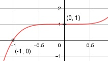

Aufgabe 65 f(x) = x5 + 1 f'(x) = 5x4, f''(x) = 20x3, f'''(x) = 60x2 Definitionsbereich: -∞ < x < ∞ Wertebereich: -∞ < f(x) < ∞ Asymptoten: - Symmetrie zur y-Achse bzw. zum Punkt (0|0): f(-x) = (-x)5 + 1 f(-x) = -x5 + 1 ≠ f(x) --> keine Achsensymmetrie -f(-x) = -(-x5 + 1) -f(-x) = x5 – 1 ≠ f(x) --> keine Punktsymmetrie Nullstellen: f(x) = 0 x5 + 1 = 0 | -1 x5 = -1 | x = -1 N(-1|0) Schnittpunkt mit der y-Achse: x = 0 f(0) = 05 + 1 = 1 Sy(0|1) Extrempunkte: 5x4 = 0 |:5 x4 = 0| x1 = 0, f(0) = 1 f''(0) = 20 * 03 = 0 --> keine Extrempunkte Wendepunkte: f''(x) = 0 20x3 = 0 |:20 x3 = 0 | x1,2,3 = 0 f'''(0) = 60 * 0 = 0 f''''(0) = 120 * 0 = 0 f'''''(0) = 120 ≠ 0 --> Grad der Ableitung ungerade --> Sattelpunkt (0|1) Graph:
